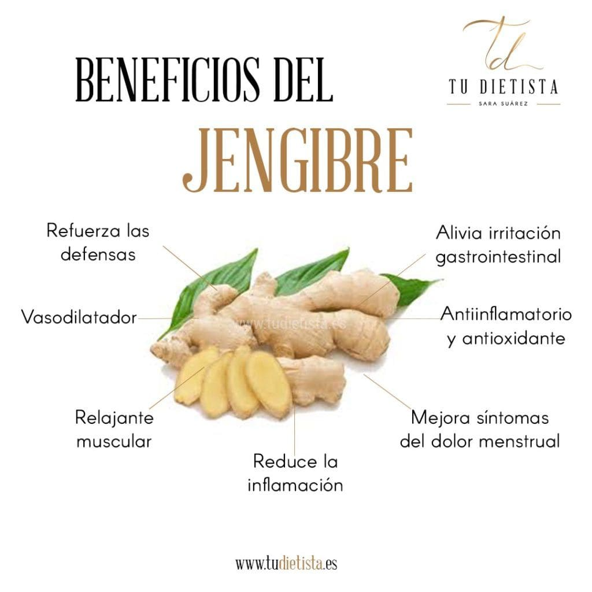
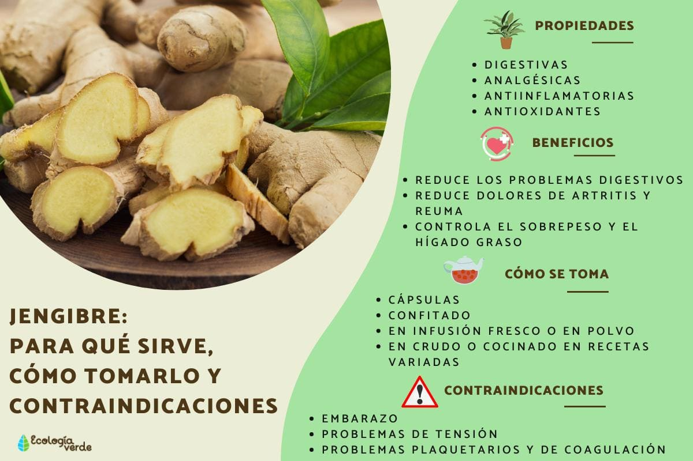
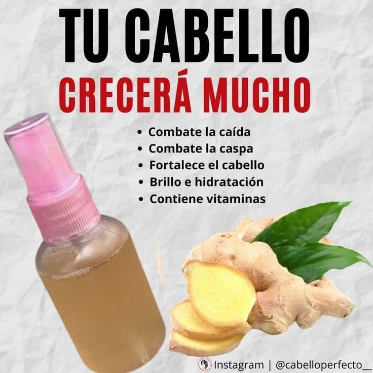
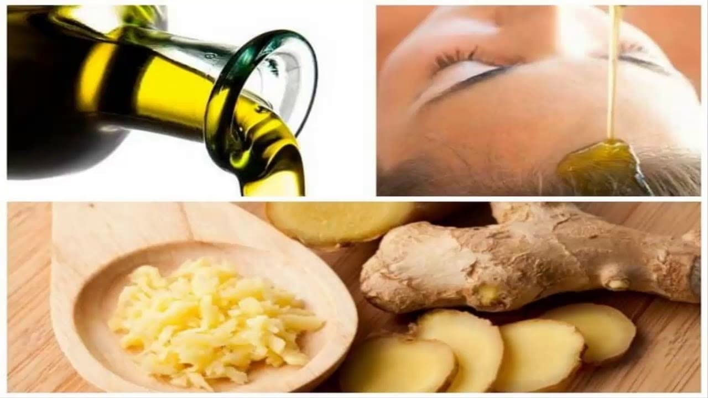
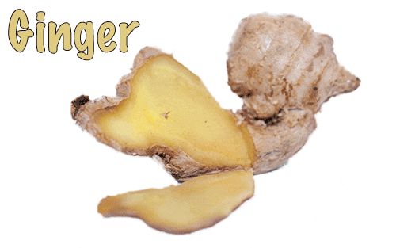

GINGER MED
Principal
Introducción:
Este proyecto presenta a Ginger Med, una iniciativa dedicada a transformar las propiedades milenarias del jengibre en productos de cuidado personal. Nos enfocamos en aprovechar las capacidades antiinflamatorias y antioxidantes de esta raíz para ofrecer una alternativa natural y efectiva.
Objetivos:
• Desarrollar un tónico a base de jengibre que promueva la salud capilar y cutánea.
• Informar sobre los métodos de cultivo y extracción artesanal de los beneficios del jengibre.
• Consolidar la identidad visual y los valores de la marca Ginger Med.
Conócenos
Nombres:
Anna Helena Arce Pérez
Valentín Cabrera Morales
Eric Daniel Carrillo Torres
Mario Emmanuel González Esquivel
Maximino Malagón Olguín
Nayeli Mendoza Cruz
Contactos:
anna.230310262@a.cobaq.edu.mx
valentin.230310367@a.cobaq.edu.mx
eric.231010011@a.cobaq.edu.mx
mario.230310175@a.cobaq.edu.mx
maximino.230310434@a.cobaq.edu.mx
nayeli.230310519@a.cobaq.edu.mx
Redes:
Encuéntranos en redes sociales como Ginger Med, donde mostramos el desarrollo de nuestra identidad visual, logotipos y eslóganes.
Planta y Beneficios
Hábitat y Cuidados:
El jengibre (Zingiber officinale) es una planta de clima tropical que requiere sombra parcial, mucha humedad y un suelo rico en materia orgánica con buen drenaje.
Beneficios a Largo Plazo:
Gracias a su alto contenido de gingerol, el uso constante ayuda a combatir el envejecimiento celular, reducir la caspa en el cuero cabelludo y fortalecer los folículos pilosos.
Beneficios a Corto Plazo:
El jengibre ayuda a brindar frescura inmediata, estimular la circulación sanguínea y proporcionar una sensación relajante en la piel y el cuero cabelludo.
 |
Reproducción y Uso
Producción y Uso de los Productos:
La producción se realiza mediante la extracción controlada del jugo del rizoma de jengibre, el cual se filtra y estabiliza para mantener sus enzimas activas y sus beneficios intactos.
Usos Recomendados:
Se recomienda aplicar el tónico directamente sobre la piel o el cuero cabelludo limpio. Es ideal para usar después del ejercicio o como parte de la rutina de cuidado nocturno.
 |
Producto
Tónico:
Nuestro tónico estrella Ginger Med está diseñado para ser ligero, de rápida absorción y con un aroma cítrico natural característico del jengibre fresco.
Procedimientos:
El proceso incluye la selección de rizomas maduros, lavado, triturado, prensado en frío para obtener el extracto y mezcla con agua destilada para alcanzar la concentración ideal.
Materiales:
Utilizamos rizomas de jengibre orgánico, agua destilada, filtros de tela fina, envases de vidrio ámbar para proteger el producto de la luz y etiquetas biodegradables.
 |
 |
Experiencia
Experiencia en hacerlo:
El desarrollo de Ginger Med nos permitió aprender sobre procesos químicos naturales y la importancia de la precisión en las medidas para obtener un producto seguro y estable.
Anécdota:
Durante nuestras primeras pruebas, aprendimos que el jengibre es extremadamente potente; al principio el aroma era tan intenso que tuvimos que ajustar la fórmula varias veces hasta encontrar el equilibrio perfecto.
Contactos
Escuela:
Colegio de Bachilleres del Estado de Querétaro
Nombres:
Anna Helena Arce Pérez
Valentín Cabrera Morales
Eric Daniel Carrillo Torres
Mario Emmanuel González Esquivel
Maximino Malagón Olguín
Nayeli Mendoza Cruz
Correos:
anna.230310262@a.cobaq.edu.mx
valentin.230310367@a.cobaq.edu.mx
eric.231010011@a.cobaq.edu.mx
mario.230310175@a.cobaq.edu.mx
maximino.230310434@a.cobaq.edu.mx
nayeli.230310519@a.cobaq.edu.mx

 2026
2026